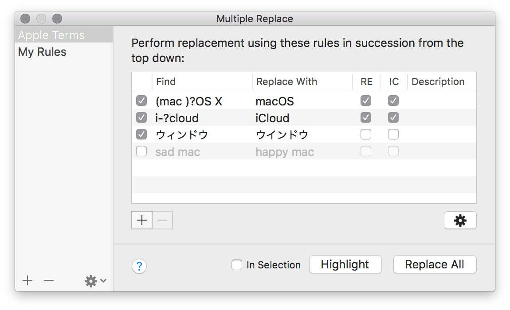

Using the Multiple Replacement feature, you can process multiple text replacements at once in succession. The replacement rules can be stored as a named preset and reused when you need.
You can open the Multiple Replace window to manage and process the multiple replacements in your document.

The stored replacement definitions that you created before are listed in the list on the left.
You can export your replacement definitions to transfer them to another computer. Each replacement definition becomes a single CotEditor replacement definition file, which has a .cotrpl filename extension and of which content is written in JSON format.
The definition selected in the list on the left is shown in the editor area on the right side. The replacement rules in the editor area will be performed row by row from top to bottom at once.
Use the buttons at the bottom of the editor area to perform multiple replacements.
* Beware that the matches by the Highlight command can be different from the replacement targets when you perform actual Replace All, because, on the Replace All, the succeeding rows are applied to the document that the previous rows above have already been applied to.
You can create your own replacement definitions to process multiple replacements.
You don’t need to perform a save after the modification because your changes will be saved automatically immediately during the edit.
A row with an invalid replacement rule will just be skipped when the replacement is performed.
| Option | Description |
|---|---|
| (checkbox) | If the checkbox is turned off, the row will not be applied and just be skipped. You can use this option to keep a replacement rule that will optionally be used. |
| Find | A string to search for. You cannot leave this field blank. When it is blank, the row will be ignored as it is invalid. |
| Replace With | A string to replace with. If you leave this field, the matches are just deleted. |
| RE | Search with regular expression (abbreviation of Regular Expression). |
| IC | Ignore character case on search (abbreviation of Ignore Case). |
| Description | You can use this field to leave a comment about the rule. The description doesn’t affect to replacement. This field can be left blank. |
You can customize the delicate find behavior of replacement from the advanced options view. Those settings are also saved to your replacement definition and applied to all rules in the same replacement definition. Click the gear button in the Multiple Replace window, then click checkboxes to change the behavior.
To learn about details of each option item, see Find or replace text.